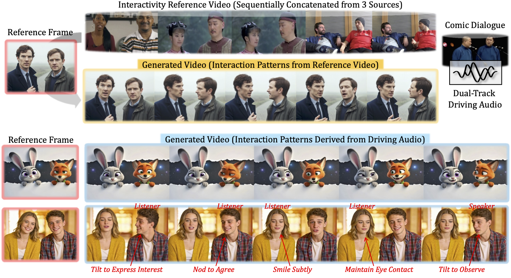
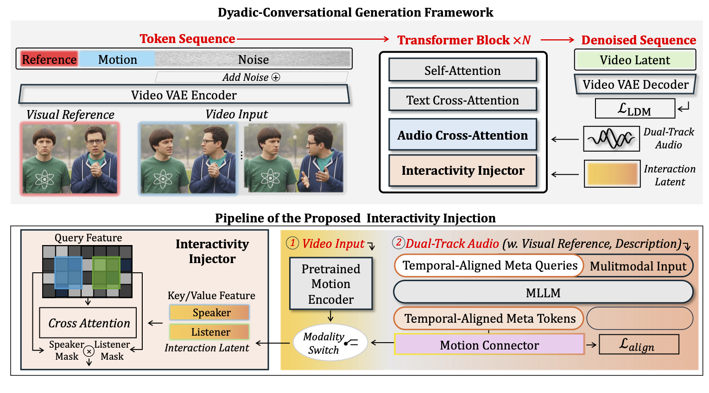

Interactive Dyadic Speech-to-Video Generation by Querying Intermediate Visual Guidance
Given a dyadic audio input, our pipeline enables interactive dyadic speech-to-video generation by querying intermediate visual priors.
Interaction Patterns from Driving Audio.
Interaction Patterns from Reference Video.
Interaction Patterns from Driving Audio.
Interaction Patterns from Reference Video.
Our method generates visual-audio synchronized conversational videos conditioned on a single reference frame of two subjects and dual-track driving audio, either synthesizing plausible interactions directly from the driving audio or replicating interaction patterns from a reference video.
Abstract
Despite progress in speech-to-video synthesis, existing methods often struggle to capture cross-individual dependencies and provide fine-grained control over reactive behaviors in dyadic settings. To address these challenges, we propose InterDyad, a framework that enables naturalistic interactive dynamics synthesis via querying structural motion guidance. Specifically, we first design an Interactivity Injector that achieves video reenactment based on identity-agnostic motion priors extracted from reference videos. Building upon this, we introduce a MetaQuery-based modality alignment mechanism to bridge the gap between conversational audio and these motion priors. By leveraging a Multimodal Large Language Model (MLLM), our framework is able to distill linguistic intent from audio to dictate the precise timing and appropriateness of reactions. To further improve lip-sync quality under extreme head poses, we propose Role-aware Dyadic Gaussian Guidance (RoDG) for enhanced lip-synchronization and spatial consistency. Finally, we introduce a dedicated evaluation suite with novelly designed metrics to quantify dyadic interaction. Comprehensive experiments demonstrate that InterDyad significantly outperforms state-of-the-art methods in producing natural and contextually grounded two-person interactions.
Method

Top: The overall architecture is constructed by sequentially stacking Transformer blocks and trained via denoising to synthesize dyadic conversational videos with synchronized audio-visual human dynamics and coherent inter-subject interactions.
Bottom: We illustrate the interactivity injection mechanism, which leverages switchable multimodal inputs to enable rich and controllable synthesis of interactive motion patterns.
Loading video list…